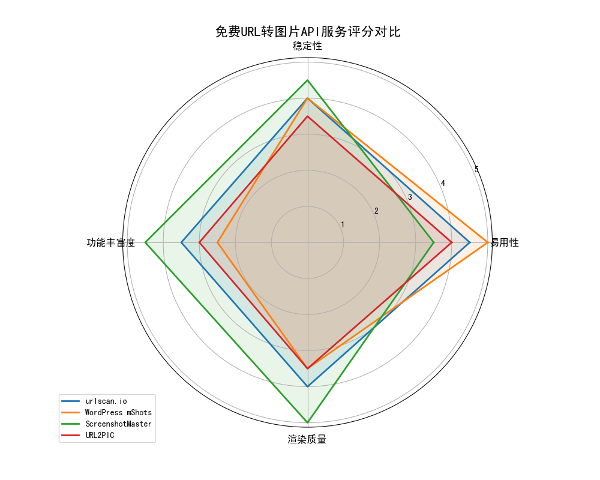
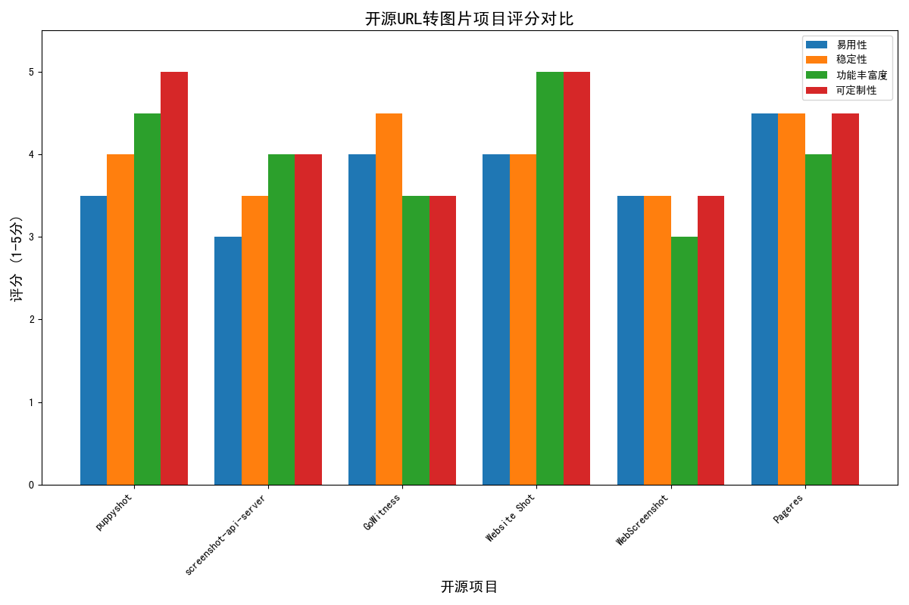

调研背景与目标
本次调研旨在寻找和评估能够将URL网页转换为图片的免费API服务和开源项目。通过全面评估各种可用解决方案，为不同应用场景提供最佳推荐，帮助用户根据自身需求选择合适的工具。我们基于多项核心指标进行评估，包括性能、渲染质量、稳定性、易用性和功能支持等。
核心评估指标
性能指标
- 转换速度
- 并发处理能力
- 资源消耗
- 初始化时间
渲染质量指标
- 渲染准确性
- JavaScript支持
- 响应式设计支持
- 特殊元素处理
- 字体渲染
稳定性指标
- 错误率
- 异常恢复能力
- 长时间运行稳定性
易用性与整合性
- API设计
- 配置选项
- 部署难度
- 整合难度
功能性要求
- 图片格式支持
- 分辨率控制
- 选择性截图
- 延时截图
- 认证支持
免费API服务评估

urlscan.io
无需注册
URL分析
安全性
使用简单直接的API服务，除截图外还提供额外的URL分析数据，常用于安全研究和威胁情报收集。
API格式:
https://urlscan.io/liveshot/?width=宽度&height=高度&url=网址
优势:
- 无需注册即可使用基本功能
- API调用简单直接
- 提供深入的URL分析数据
- 稳定性良好，被多个安全平台集成
劣势:
- 高级功能需要API密钥
- 存在数据隐私问题
- 自定义选项有限
WordPress mShots
极易使用
国内速度快
无需认证
由WordPress.com提供的简单截图服务，无需认证，国内访问速度较快，适合基础截图需求。
API格式:
https://s0.wp.com/mshots/v1/网址?w=宽度&h=高度
优势:
- 使用极为简单，无需任何认证
- URL结构清晰
- 国内访问速度较快
- 由WordPress.com提供支持，服务相对稳定
劣势:
- 首次请求需等待处理，有延迟
- 功能较为基础，缺乏高级自定义选项
- 最大图像尺寸限制为1280x960
ScreenshotMaster
高质量渲染
功能丰富
需要API密钥
使用真正的Chrome浏览器捕捉像素完美的屏幕截图，功能丰富，托管在阿里云与腾讯云上。
API格式:
https://www.screenshotmaster.com/api/v1/screenshot?url=URL&token=API_token&width=宽度&height=高度
优势:
- 使用Chrome浏览器渲染，像素完美
- 丰富的参数选项和自定义功能
- 支持网页长截图
- 托管在阿里云与腾讯云上，高可用
劣势:
- 需要申请API token
- 使用门槛略高
- 免费版可能有使用限制
URL2PIC
简单
不需API密钥
基础功能
提供基础网页截图功能的简单API，无需API密钥，但功能相对有限。
API格式:
https://url2pic.php127.com/thumbnail?url=网站地址&width=截屏宽度
优势:
- 使用相对简单
- 不需要API密钥
- 提供基本截图功能
劣势:
- 功能相对有限
- 文档和支持资源较少
- 稳定性不及其他选项
开源项目评估

puppyshot
Node.js+Puppeteer
高度可定制
功能完善
多格式支持
基于Puppeteer实现的网页截图服务，支持页面整页截图、指定元素截图和区域截图。
主要特点:
- 页面整页截图
- 指定元素及系列元素截图
- 指定区域截图
- 支持jpg、png和pdf等格式
优势:
- 功能完善
- 基于成熟技术
- 支持多种输出格式
- 高度可定制
劣势:
- 部署要求较高
- 需要Node.js环境
- 系统资源消耗大
GoWitness
Golang+Chrome
性能优良
资源消耗低
批量处理
用Golang编写的网站截图程序，使用Chrome Headless，适合批量处理和服务器部署。
主要特点:
- 通过命令行生成Web界面的截图
- 提供捕获屏幕截图并保存的API功能
- 基于Chrome Headless，渲染质量高
- 执行速度快，资源消耗相对较低
优势:
- 性能优良
- 资源消耗低
- 执行速度快
- 适合批量处理
劣势:
- 自定义选项较少
- 主要面向安全审计
- 集成可能需要额外工作
Website Shot
Node.js+Vue
功能全面
高度可定制
跨平台
开源跨平台截图应用程序，基于nodejs和nuxtjs使用JS/Vue框架开发，功能丰富。
主要特点:
- 延迟捕获屏幕截图
- 裁剪到设定的高度
- 将自定义CSS应用到网页
- 捕获特定DOM元素
- 模拟深色方案的偏好
优势:
- 功能最为丰富
- 高度可定制
- 多种截图模式
- 跨平台支持
劣势:
- 部署复杂
- 依赖较多
- 资源需求高
Pageres
Node.js
稳定性高
易用性好
社区活跃
支持以各种分辨率捕获网站屏幕截图，API简单，文档丰富，社区支持好。
主要特点:
- 支持多种分辨率的屏幕截图
- API使用简单
- 文档丰富，社区支持好
- 可以轻松确保网站的响应能力
优势:
- 稳定性高
- 易用性好
- 多分辨率支持
- 社区活跃
劣势:
- 专注于响应式测试
- 高级功能有限
技术决策矩阵
按使用场景选择最佳方案
| 使用场景 | 推荐免费API | 推荐开源项目 | 选择理由 |
|---|---|---|---|
| 内容监控和变更跟踪 | urlscan.io | GoWitness | 提供稳定的定期截图能力，支持批量处理 |
| 社交媒体预览生成 | WordPress mShots | Pageres | 易用性高，快速集成，支持多种分辨率 |
| 企业应用集成 | ScreenshotMaster | puppyshot | 高质量渲染，功能丰富，可扩展性强 |
| 响应式设计测试 | URL2PIC | Website Shot | 多设备支持，可自定义视口大小 |
| 网页归档与文档生成 | urlscan.io | WebScreenshot | 提供长期存储选项和批处理能力 |
按技术要求选择最佳方案
| 技术需求 | 推荐免费API | 推荐开源项目 | 选择理由 |
|---|---|---|---|
| 低延迟要求 | WordPress mShots | GoWitness | 响应速度快，资源占用少 |
| 高渲染质量 | ScreenshotMaster | puppyshot | 使用Chrome内核，完整支持现代Web标准 |
| 简单集成 | WordPress mShots | Pageres | API简单，使用门槛低 |
| 高度自定义 | ScreenshotMaster | Website Shot | 提供丰富的参数选项和控制能力 |
| 国内访问友好 | WordPress mShots | 自建puppyshot | 国内访问速度较快 |
技术选择流程图
graph TD
A[开始评估] --> B{需要高度定制?}
B -->|是| C[考虑开源项目]
B -->|否| D{需要快速集成?}
D -->|是| E[推荐WordPress mShots或urlscan.io]
D -->|否| F{需要高质量渲染?}
F -->|是| G[推荐ScreenshotMaster或puppyshot]
F -->|否| H{需要批量处理?}
H -->|是| I[推荐GoWitness或自建API服务]
H -->|否| J{有严格预算限制?}
J -->|是| K[推荐免费API服务]
J -->|否| L{需要国内访问友好?}
L -->|是| M[推荐WordPress mShots或自建服务]
L -->|否| N[根据具体需求矩阵选择最适合的解决方案]
结论与建议
URL转图片技术领域有多种可选方案，适合不同需求和技术水平的用户。综合评估后发现：
免费API服务中
- WordPress mShots在易用性方面得分最高，适合快速实现简单功能
- ScreenshotMaster在渲染质量和功能丰富度方面表现突出，适合专业使用
- urlscan.io在安全分析领域具有独特优势，适合需要同时进行URL风险评估的场景
开源项目中
- Website Shot功能最为全面，适合需要高度定制的场景
- Pageres稳定性和易用性俱佳，适合快速部署
- puppyshot可定制性最强，适合特殊需求
- GoWitness性能优良，适合服务器端部署
实施建议
小型项目或个人使用
直接使用WordPress mShots或urlscan.io免费API，无需部署基础设施，快速集成。
中型项目或团队使用
考虑轻量级开源项目如Pageres或GoWitness，或使用ScreenshotMaster API获取更好的质量和稳定性。
大型企业或高定制需求
部署puppyshot或Website Shot自建服务，投入资源确保高可用性和性能。
混合策略
对于复杂需求，可以考虑混合策略：
- 核心功能使用自建开源解决方案
- 峰值负载使用云API服务分担压力
- 根据不同使用场景选择不同工具组合